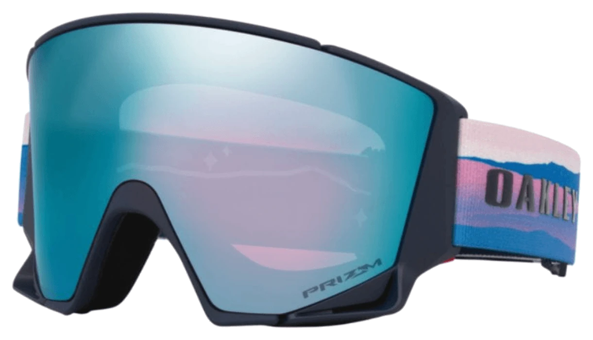

Lente
Lente conica a strato singolo, con l'antiappannante laminato direttamente sulla lente: meno distorsioni e il 60% di campo visivo in più rispetto alla Line Miner.
- Lente
- Prizm™ Snow Sapphire Iridium
- Categoria
- S3 · VLT 13%
- Luce
- Sole e nuvole
Model OO7147 — Flow Scape™ M
Ogni dettaglio della pista,
anche quando la luce cala.
Edizione Mikaela Shiffrin Signature: lente conica Prizm™ Snow Sapphire Iridium, con la seconda lente Prizm™ Snow Iced già nella confezione.
(Shiffrin Signature) (Inverno 25/26)
Lente conica a strato singolo, con l'antiappannante laminato direttamente sulla lente: meno distorsioni e il 60% di campo visivo in più rispetto alla Line Miner.
Calzata media, pensata per visi più piccoli o caschi a profilo basso. La schiuma Vision Rapt, modellata in 3D, appoggia senza punti di pressione.
Cambio lente Switchlock™: due agganci meccanici, niente magneti. La seconda lente per neve e cielo coperto è già nella confezione.
Flow Scape™ M — Mikaela Shiffrin Signature

€ 395